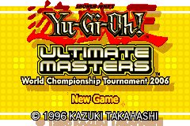
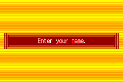

Yu-Gi-Oh! - Ultimate Masters - World Championship Tournament 2006 (USA) (En,Ja,Fr,De,Es,It)
Stateless / Passcode
Cartridge Identity
- Game Code
BY6E(FamilyBY6)- Header Title
YUGIOHWCT06- Maker / Revision
A4/ rev0- ROM Size
- 32.0 MiB (33,554,432 B)
- Save Media
None / Unknown- SHA-256
f405c620da05a817a5d63f45a4707b914260fb5802fe519b1e31bf050ba8f524- Engine / SDK Group
comm-014(25 families)
Screenshots


Cartridge Storage Architecture: Stateless / Passcode
Zero non-volatile battery hardware: This cartridge PCB contains ROM only (no SRAM, Flash, or EEPROM chips). Progression is preserved via on-screen passcodes or session-only gameplay. No
.sav file is generated or required.
ROM Assets, Compression & Audio
- BIOS Compression
- LZ77 (
0x10): 93 streams · RLE (0x30): 0 streams - ROM Pointer Tables
- 60 tables (1 pointing to validated compressed streams)
- SDK Backup Tags
SRAM_F_V103
Hardware MMIO Subsystems
ppu_display0x8014600,0x80f7674,0x80fbf18